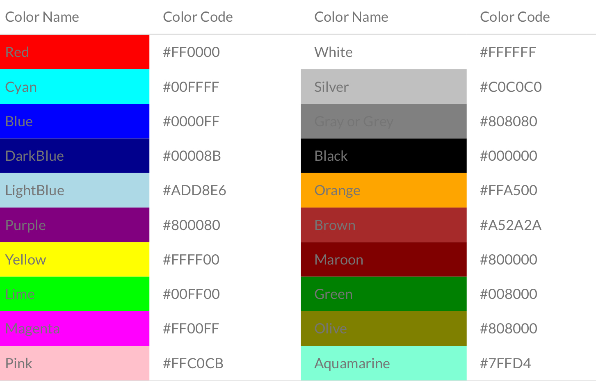
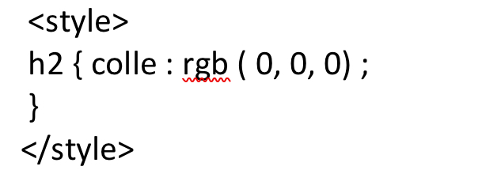
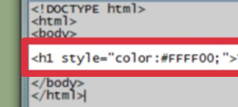
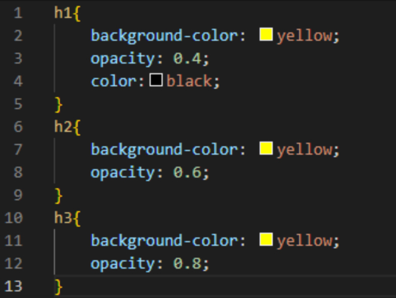
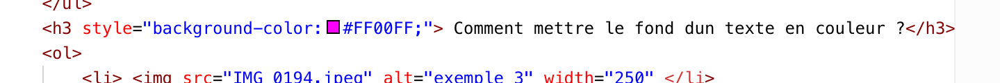

CSS
Bienvenue, sur ce site vous pourrez apprendre les bases du CSS, en apprendre plus sur ce language informatique et savoir comme l'utiliser.
Pour commencer voici quelques informations sur le CSS
- CSS signifie « Cascading Style Sheets » donc en français « feuille de style en cascade »
- Contrairement au HTLM le CSS ne permet pas l'affichage des informations de la page sur le navigateur mais ils sont relié puisque le CSS met en page son contenue
- Le CSS permet la mise en forme hors des documents, il est par exemple possible de ne décrire que la structure d'un document en HTML, et de décrire toute la présentation dans une feuille de style CSS séparée
- Les standards définissant CSS sont publiés par le World Wide Web Consortium (W3C). Introduit au milieu des années 1990, CSS devient couramment utilisé dans la conception de sites web et bien pris en charge par les navigateurs web dans les années 2000. En 1996, Internet Explorer 3.0 est le premier navigateur commercial à implémenter partiellement CSS alors que celle-ci est encore en cours de formulation. L'apparition de CSS répond à une volonté de proposer une alternative à l'évolution du HTML d'un langage de structuration vers un langage de présentation.
- CSS est un langage descriptif de la mise en forme du document HTML ou XML, HTML et XML étant des langages de balisage. Le langage de description CSS et les langages de balisage sont complémentaires. Associé à XML ou HTML, le langage CSS peut ainsi être considéré comme un langage de programmation
Les Avantages du CSS
- La conception d'un document se fait dans un premier temps sans se soucier de la présentation, ce qui permet d'être plus efficace .
- Un même document peut donner le choix entre plusieurs feuilles de style, par exemple une pour l'impression et une pour la lecture à l'écran.
- Certains navigateurs web permettent au visiteur de choisir un style parmi plusieurs.
Mise en Application
voici une aide pour le nom des couleurs:

-
Comment mettre en couleur un paragraphe ?(comme ici)
Tout d'abord il y a plusieurs façon :
- 
- 
-
Comment mettre le fond dun texte en couleur ?(comme ici)
- 
- 